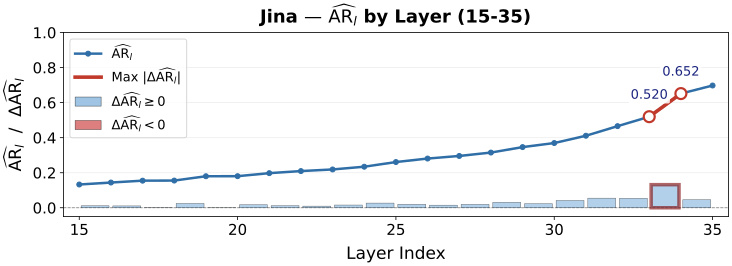

Introduction
Presentation slides, scanned reports and scientific posters carry their information through text, layout and figures together. Finding the right page in a collection of such documents calls for retrieval that reads visual and textual cues at once, and a growing line of work does this directly from rendered page images, skipping the OCR and chunking pipelines that text retrieval depends on and that break on visually rich pages.
Two families of visual document retriever have emerged. Late-interaction retrievers, which trace back to ColBERT and were brought to the multimodal setting by ColPali, represent a query and a document each as a set of token-level embeddings and compute relevance by fine-grained matching between the two sets. This preserves local detail and retrieves well, but a single page can require more than a thousand patch vectors, so the index is large and scoring is expensive. Dense single-vector retrievers take the opposite route and compress each input into one embedding, scored by a dot product. The index is compact and search is fast, but everything the model knows about a page has to pass through one final-layer vector. Retrieval-relevant signal that exists in the intermediate layers can be discarded before it reaches the output, and dense retrievers trail late interaction in quality.
Recent work has found that the internal representations of deep networks hold more task-relevant information than their final outputs. In language, SPIN and SIREN showed that intermediate layers carry information that improves text classification. In vision, Perception Encoder found that the strongest visual embeddings often appear before the last layer. The question for multimodal retrieval is whether the internal representations of a single-vector retriever can recover what the final-layer bottleneck loses, without giving up the efficiency of single-vector search.
We answer in two steps. First, a layerwise diagnostic of three single-vector retrievers, built on a normalized form of Centered Kernel Alignment and a new alignment ratio, shows that retrieval signal does reside in the internal layers but is spread unevenly: earlier layers hold useful structure in a geometry that does not line up with the final embedding space, while later layers are progressively more aligned with it. Second, guided by this diagnostic, we build MINER (Mining Multimodal Internal RepreseNtation for Efficient Retrieval), a lightweight plug-in that attaches a probe to each selected layer, masks each layer down to its most useful dimensions, and fuses what remains into a single dense embedding. The backbone is not modified, the module works with both end-of-sequence-token and pooling readouts, and the output has the same dimensionality as the backbone's own embedding, so storage and serving cost stay those of dense retrieval.

Across the ViDoRe V1, V2 and V3 benchmark suites, MINER improves three dense backbones, by up to 4.5% in nDCG@5, with the same index footprint and 1.07 times the query latency. On the backbone that supports both retrieval modes, it closes almost half of the gap to late interaction at 42.4 times lower index storage.
Where retrieval signal sits inside a single-vector retriever
We study three dense multimodal retrievers: Jina-Embeddings-v4 (Jina), Eager-Embed-v1 (Eager) and MoCa-3B (MoCa). Each has a transformer backbone and a readout operator that turns a layer's hidden states into one vector, either the end-of-sequence token or a pooling over tokens. Applying that readout at every layer gives a layerwise readout for each input. For a paired text and image, the natural reference point for either side is the other side's final-layer embedding, which we call its cross-modal anchor: the text's anchor is the image's final embedding, and vice versa, because retrieval scores a query against a document in that final space. We compare each layer's readouts to these anchors to find out which layers hold retrieval signal that a lightweight module can extract, and whether all such layers should be treated the same way.
For the first, we use linear Centered Kernel Alignment (CKA), which compares two representation spaces at the dataset level and is therefore insensitive to the coordinate mismatches that are common between layers of a deep network. A high CKA between a layer's readouts and the anchors means the layer's representation space is structurally similar to the final retrieval space; a low value means the layer either has not yet formed that structure or expresses it in a geometry too distant to recover cheaply. Raw CKA values differ in scale from one backbone to another, so we min-max normalize them across the layers of each backbone and keep the layers whose normalized score is at least 0.6. For Jina and MoCa this candidate set is layers 15 through 36; for Eager it is layers 19 through 36.

For the second, structural similarity is not enough. CKA is invariant to rotations of the representation space, so a layer can share dataset-level geometry with the anchor space while its individual readouts point in quite different directions from their anchors. We therefore also measure the average per-sample cosine similarity between a layer's readouts and their anchors, and define the alignment ratio as that cosine divided by the layer's CKA. The ratio asks how much of a layer's structural similarity is already realized as direct, coordinate-level alignment. A high ratio means the layer's signal can be extracted with a simple operation that preserves its geometry. A low ratio means the useful structure is there but sits in a less aligned subspace and needs a more expressive transformation to bring it into line.
Figure 2 plots the normalized alignment ratio for Jina's candidate layers, and the picture is the same for Eager and MoCa. Through most of the candidate set the ratio is low and changes slowly. Over the last three layers it jumps, with the largest single step between layers 33 and 34. The candidate layers therefore fall into two regimes, and MINER gives each regime its own kind of probe. Normalized CKA decides which layers to extract from, and the alignment ratio decides how each one is treated.
Probing and fusing the selected layers
A single-vector retriever encodes a query and a document into embeddings and ranks documents by their inner product with the query. Ordinarily both embeddings are the backbone's final-layer readout. MINER builds them instead from several internal layers, in two stages that are trained one after the other.
Retrieval-aligned layer probing
Following the alignment-ratio analysis, we split the candidate layers into the last three, which are already aligned with the final space, and the earlier ones, which are structurally similar but less aligned. Each group gets its own probe, shared across the text and image sides because both pass through the same backbone into a common space. For the aligned layers, a Base Probe learns one importance weight per dimension and rescales the readout element by element; the coordinate system is left intact because only a reweighting of neurons is needed. For the less aligned layers, a Normalized Projection Probe applies the same element-wise reweighting and then a linear projection whose rows are normalized to unit length. The normalization lets the projection realign the subspace without rescaling it, and the importance vector keeps an explicit record of which neurons matter, which the next stage will use.
Every probe is trained toward the cross-modal anchors in a siamese fashion: the probed text readout at a layer should match the image's final embedding, and the probed image readout should match the text's. The loss is InfoNCE with cosine similarity over in-batch and hard negatives, plus an L1 penalty on the importance vector that pushes it toward sparsity.
Adaptive sparse multi-layer fusion
Layers differ in how much they contribute to retrieval, and a stronger layer should be allowed to keep more of its dimensions. We measure each candidate layer's standalone validation nDCG@5, normalize it across the candidate set to a utility score between zero and one, and turn that into a retention ratio with a floor so that every layer keeps at least a minimum fraction; the floor is 0.2 by default. Within each layer we rank dimensions by the magnitude of the learned importance weights and keep only the top fraction, zeroing the rest with a hard binary mask.

Figure 3 shows the resulting profile for Jina, and Eager and MoCa follow the same shape despite their different training and readouts. The mask keeps a small fraction of dimensions in the earlier and middle candidate layers, climbs steeply in the late layers, dips around layer 34, and reaches every dimension at the final layer. Earlier layers hold useful but sparse features that need selective extraction, the final layers are close to the dense embedding interface and keep most of their dimensions, and the dip shows that a high layer index alone is no guarantee: some late layers carry more redundant information than their neighbors.
The fusion head then combines the masked layers. Aligned layers contribute their masked readout directly; less aligned layers are first passed through the projection learned by their probe. The head learns a weight for every dimension of every layer and a global bias, and sums the weighted layers into one embedding of the backbone's original dimensionality. It is trained with the same InfoNCE objective between the fused text and image embeddings. At retrieval time, queries and documents are encoded this way and ranked by inner product exactly as before.
What we find
Retrieval quality on ViDoRe
Jina supports both dense retrieval and late interaction, so it allows a direct comparison of the two modes and MINER on one backbone; Eager is a dense retriever with an end-of-sequence readout; MoCa is a stronger bidirectional embedding model with a pooling readout. For each backbone we train MINER only on that backbone's own training data, so any gain comes from using its internal representations better, with no new supervision; the adaptive masks use the matching validation set. The probes take 11 to 17 hours on two RTX 4090 GPUs and the fusion head 5 to 8 hours on one, depending on the backbone.
We evaluate on the three ViDoRe suites with their default metrics, nDCG@5 for V1 and V2 and nDCG@10 for V3, and treat V2 as the primary benchmark because V1 has become saturated and V3 is new, with few established baselines. Single-vector baselines are the models under 5B parameters on the official ViDoRe leaderboard, and the late-interaction baselines are the strongest model from each ViDoRe backbone family. Significance is a paired t-test over per-query scores between MINER and its backbone at the 0.05 level.
| Model | Size | Bio | Econ | ESG-Human | ESG-Syn | Avg. |
|---|---|---|---|---|---|---|
| Late interaction (multi-vector) | ||||||
| ColPali | 3B | 54.6 | 48.6 | 58.5 | 54.9 | 54.2 |
| ColQwen2 | 2B | 56.3 | 50.6 | 60.4 | 52.5 | 55.0 |
| ColQwen2.5 | 3B | 59.2 | 53.3 | 66.4 | 58.3 | 59.3 |
| Jina (late interaction) | 4B | 60.9 | 51.9 | 65.1 | 52.5 | 57.6 |
| Dense single-vector | ||||||
| SigLIP | 877M | 27.7 | 18.6 | 44.5 | 35.0 | 31.4 |
| VLM2Vec | 4B | 33.2 | 23.3 | 36.3 | 27.8 | 30.1 |
| Jina | 4B | 58.5 | 55.1 | 54.8 | 44.8 | 53.3 |
| Eager | 4B | 63.4 | 56.6 | 51.7 | 52.2 | 56.0 |
| MoCa | 3B | 59.7 | 57.0 | 63.5 | 53.1 | 58.3 |
| Dense single-vector with MINER | ||||||
| MINER-Jina | 4B | 58.6+0.2% | 56.8+3.1%* | 56.8+3.7% | 48.7+8.7%* | 55.2+3.6%* |
| MINER-Eager | 4B | 64.1+1.1%* | 57.8+2.1% | 59.1+14.3%* | 52.9+1.4% | 58.5+4.5%* |
| MINER-MoCa | 3B | 59.2−0.8% | 59.6+4.6%* | 64.8+2.1% | 52.9−0.4% | 59.1+1.4% |
MINER improves all three backbones on average. It lifts Jina from 53.3 to 55.2, a relative gain of 3.6%, and Eager from 56.0 to 58.5, a gain of 4.5%, both significant. MoCa moves from 58.3 to 59.1, a gain that is not significant at the default hyperparameters; the paper's sensitivity analysis finds sparsity floors at which it is, which suggests that the best hyperparameter regime differs between backbones. The gains are not uniform across subsets: Econ and ESG-Human improve for every backbone, while Bio and ESG-Syn move slightly down for MoCa. Against the late-interaction models, MINER-MoCa's 59.1 sits 0.2 below the best of them, ColQwen2.5 at 59.3, and MINER-Jina closes almost half of the gap between dense Jina and Jina's own late-interaction mode.
| Backbone | ViDoRe V1 (nDCG@5) | ViDoRe V3 (nDCG@10) | ||
|---|---|---|---|---|
| Dense | MINER | Dense | MINER | |
| Jina | 84.3 | 84.4 | 49.0 | 49.7* |
| Eager | 82.5 | 84.8* | 47.6 | 48.8* |
| MoCa | 85.7 | 85.6 | 49.1 | 49.5* |
The other two suites point the same way (Table 2). On V3, MINER improves all three backbones significantly, and MINER-Jina has the best average of any single-vector retriever in the comparison. On V1, where many subsets are saturated, MINER-Eager rises from 82.5 to 84.8 while MINER-Jina and MINER-MoCa stay within a tenth of a point of their already strong backbones.
Storage and latency
The point of staying single-vector is efficiency, so we measure it. Using Qdrant as the vector database, we index the full corpus of each ViDoRe V2 subset and record the average query response time and the index size. Figure 4 compares dense Jina, Jina's late-interaction mode and MINER-Jina on the same backbone.

MINER produces one embedding per query and per document with the same dimensionality as the dense backbone, so its index is byte for byte the same size and its search complexity is unchanged. The only added work is computing the fused query embedding, which raises response time by 7%, while nDCG@5 rises by 1.9 points. Against late interaction, MINER answers queries 5.3 times faster and needs over 40 times less index storage, at a cost of 2.4 points. Per subset, the quality gain over dense Jina holds on every V2 dataset, from 0.1 points on Bio to 3.9 on ESG-Syn, so the aggregate improvement is not carried by a single dataset.
| Jina mode | Queries / s | Index (MB) | nDCG@5 |
|---|---|---|---|
| Dense | 15.41 | 22.24 | 53.3 |
| Late interaction | 2.75 | 943.38 | 57.6 |
| MINER | 14.36 | 22.24 | 55.2 |
Which parts matter
We remove MINER's components one at a time on ViDoRe V2 (Table 4). All Neurons trains the fusion head over every dimension of the selected layers, with no probing or masking. All Base drops the alignment-ratio split and treats every layer as aligned, using Base Probes and their masks throughout. All Norm drops the split in the other direction and applies the Normalized Projection Probe to every layer. All variants share the frozen backbone, the selected layers and the training data of the full model.
| Backbone | Dense | All Neurons | All Base | All Norm | MINER |
|---|---|---|---|---|---|
| Jina | 53.3 | 54.6 | 54.9 | 50.0 | 55.2 |
| Eager | 56.0 | 57.1 | 57.4 | 53.1 | 58.5 |
| MoCa | 58.3 | 58.4 | 58.4 | 56.0 | 59.1 |
Fusing all dimensions of the selected layers already beats the dense baseline for every backbone, which confirms that the internal layers carry retrieval signal. It also falls short of the full model every time, so the gains do not come from fusion alone. The two probing variants show why the split matters: treating every layer as aligned loses a little, and treating every layer as misaligned loses a lot. The normalized projection helps the layers that need realignment and distorts the ones that were already aligned.
Sensitivity to the two main hyperparameters

Two choices could in principle be fragile: the CKA cutoff that selects the candidate layers and the floor on how many dimensions each layer keeps. Figure 5 varies both for MINER-Jina. Raising the cutoff from 0.5 to 0.7 shrinks Jina's candidate set from layers 12 through 36 to layers 28 through 36, yet nDCG@5 stays within 1% of the default. Floors from 0.1 to 0.3 change it by less than 0.2%. Eager and MoCa show the same flat profiles.
Discussion
A dense retriever's final embedding is not the whole of what the model knows about a page. Reading the intermediate layers through small probes, keeping their most useful dimensions and fusing them into a vector of the original size improves dense visual document retrieval across three backbones and three benchmark suites, and it does so without changing the index or the search procedure. The layerwise diagnostic that guides MINER uses normalized CKA to choose layers and the alignment ratio to decide how to treat each one.
The evaluation has a deliberate limit. MINER needs access to a model's hidden states, and our protocol trains it only on the backbone's own training data so that the gains can be attributed to internal representations. We therefore do not evaluate closed-source models, or open-weight models whose training data is not fully disclosed, such as Qwen3-VL-Embedding-8B. Where hidden states and suitable training data are available, the module applies without modifying the backbone. Future work includes stronger multimodal backbones, broader retrieval domains, settings with limited training data, and more automatic ways to choose layers, probes and sparsity levels. The full paper contains the formal definitions, per-subset results for all three suites, training details and the additional analyses.